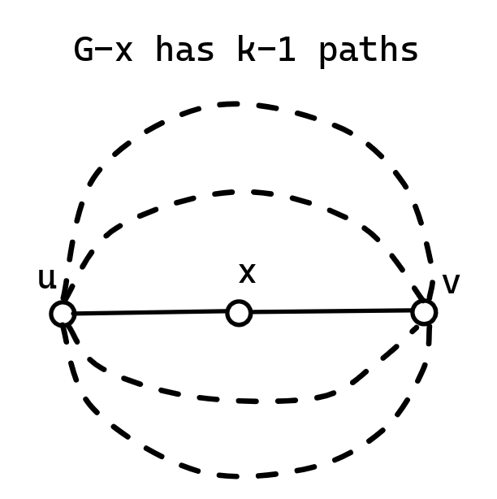
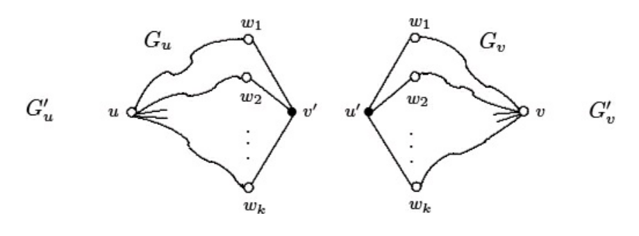
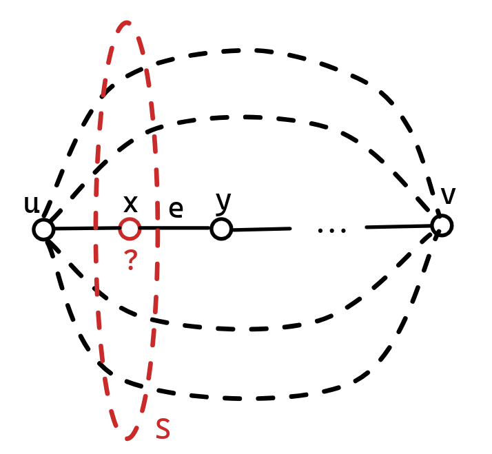
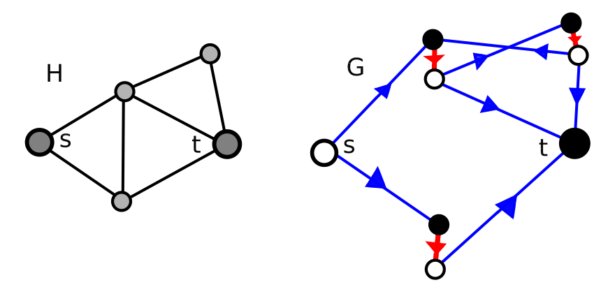

问题求解（三） Open Topic 4 笔记
OT：请调研并阐述面向点连通度或边连通度的门格尔定理的至少2种证明方法。
门格尔定理
门格尔定理(顶点版本) 对于图 \(G=\langle V, E\rangle\) 和两个不相邻的顶点 \(u, v\in V\)，使 \(u\) 和 \(v\) 不连通至少需要从 \(G\) 中删除的顶点数量（\(u\)-\(v\) 最小点割集大小）等于 \(G\) 中两两无公共内顶点的 \(u\)-\(v\) 路的数量。
门格尔定理(边版本) 对于图 \(G=\langle V, E\rangle\) 和两个顶点 \(u, v\in V\)，使 \(u\) 和 \(v\) 不连通至少需要从 \(G\) 中删除的边数量（\(u\)-\(v\) 最小边割集大小）等于 \(G\) 中两两无公共边的 \(u\)-\(v\) 路的数量。
利用归纳证明门格尔定理（点版本）1
对 \(m=\epsilon(G)\) 进行归纳。假设图 \(G\) 有大小为 \(k\) 的最小点割集 \(S\)，显然有 \(u\)-\(v\) 不交路的数量 \(\le k\)。只需证明其等于 \(k\)。
- 当 \(m=0\) 时，对于空图显然成立。
- 如果对于 \(\epsilon(G)\le m-1\) 的图都成立，则对于 \(G\) 满足 \(\epsilon(G)=m\) 的图，我门证明上述命题。当 \(k\le 1\)，结论显然成立，只考虑 \(k\ge 2\)。分为以下几种情况：
- 若存在 \(S\) 且存在 \(x\in S\) 使得 \(x\) 与 \(u\) 和 \(v\) 均相邻，那么图 \(G- x\) 有大小为 \(k-1\) 的点割集 \(S\setminus \lbrace x\rbrace\)，且 \(\epsilon(G-x)<m\)。由归纳假设，\(G-x\) 有 \(k-1\) 条 \(u\)-\(v\) 不交路，则在 \(G\) 中，加上 \(\langle u, x, v\rangle\)，有 \(k\) 条 \(u\)-\(v\) 不交路。

2. 若存在 \(S\)，满足 \(S\) 中既存在和 \(u\) 不相邻的顶点 \(v'\)，也存在和 \(v\) 不相邻的顶点 \(u\)，那么如图，可以简单地拆成两个图并运用归纳假设。
（图片来源2）
- 则剩下的情况是，对于所有的 \(S\)，要么全部顶点只和 \(u\) 相邻不和 \(v\) 相邻，要么全部顶点只和 \(v\) 相邻不和 \(u\) 相邻。不妨设是第一种。设 \(u\) 到 \(v\) 的最短路径是 \(\langle u, x, y, \cdots, v\rangle\)，记 \(e=(x, y)\)。设 \(G'=G-e\) 的最小点割集 \(Z\)，显然 \(k-1\le |Z|\le k\)。只需证明 \(|Z|=k\) 并利用归纳假设（因为 \(\epsilon(G')<m\)）即可。用反证法，假设 \(|Z|=k-1\)，则 \(Z\cup\lbrace x\rbrace\) 和 \(Z\cup\lbrace y\rbrace\) 均是 \(G\) 的两个最小分割集，于是均与 \(u\) 相邻，与最短路矛盾。故 \(|Z|=k\)，利用归纳假设，\(G-e\) 有 \(k\) 条 \(u\)-\(v\) 不交路，从而 \(G\) 也有 \(k\) 条，证毕。

用最大流最小割定理直接证明
证明边版本
如何建模？
- \(u\) 作为源点，\(v\) 作为汇点，把所有无向边当作两条方向相反的弧，容量为 1。
- 一条 \(u\)-\(v\) 路对应 \(1\) 流量，因为边的容量为 \(1\)，保证了边不重复。
- 最小割是显然的。
证明点版本
如何建模？
- \(u\) 和 \(v\) 仍然作为源汇点，把其他每个点 \(x\) 拆成入点 \(x_{in}\) 和出点 \(x_{out}\) 两个点。对于原图的有向边 \((x, y)\),在 \(x_{out}\) 和 \(y_{in}\) 间连有向边，容量为 \(\infty\)；在 \(x_{in}\) 和 \(x_{out}\) 之间连容量为 \(1\) 的边。\(u\) 则作为 \(u_{out}\)、\(v\) 作为 \(v_{in}\) 建图。
- 一条 \(u\)-\(v\) 路对应 \(1\) 流量，因为点内部的边容量为 \(1\)，保证了点不重复。
- 最小割：只能在点的入点和出点之间割开，相当于把点割去。

（图片来源3）